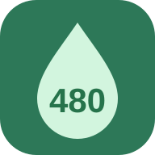

LIVLY HPwr planner今日の回復を、上手に使おう。
24時に、HPwr 480。
満タンで一日を終えるための
水やり回数を計算します。
上限 4801分で ＋1水やり −10
日付が変わりました。ゲーム内のHPwrを確認し、「今の時刻に更新」を押してください。
↳ HPwrを入力すると、ここに結果が表示されます。
02
おすすめの水やり
—回
水やり直前—
水やり直後—
24:00—
24時までの回復の無駄
— HPwr- 確認した時刻 → 水やり前
- —
- 水やり後 → 24:00
- —
- 水やり後の満タン時刻
- —
- 水やりしない場合の満タン時刻
- —
上限480の間に回復するはずだった分を「無駄」として表示しています。
計算の考え方・使い方
- 24時に480を確保できる範囲で、水やり回数を最大にします。水やりしなくても480に届かない日は、0回を案内します。
- 選んだ時刻にまとめて水やりする計算です。水やり中の時間経過は含めません。
- 10単位で消費するため、1〜9 HPwrの回復が余る場合があります。早い時刻では残量が足りず、さらに回復が余ることもあります。
- 1分単位で計算し、回復の秒数は考慮しません。途中で水やりなどをしたら、HPwrと確認時刻を更新してください。
- 「今すぐ」は入力した確認時刻を使います。日付をまたぐ予約には対応していません。